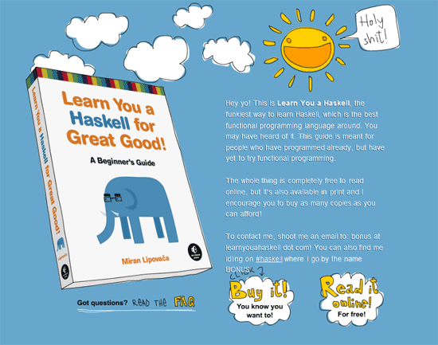
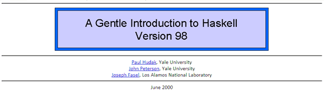

Выражения
Теория
Одна из вещей, которые делает почти любая программа — это вычисление чисел Фибоначчи
работа с числами. Вообще, именно для этой цели (а
отнюдь не для моделирования сражения между террористами и контр-террористами) компьютеры и придумывались.
По этой причине в Хаскелл есть операции сложения (обозначается знаком +),
умножения (обозначается звездочкой *), вычитания (-) и
деления (обознчается косой чертой (слешем) /, не перепутай его с обратным слешем «\»). Также
для определения порядка выполнения операций можно использовать скобки (как в обычной математике).
Давай посмотрим на программу, считающей простой пример (можешь посчитать его в уме?):
main = putStrLn show (2 + 10 * 5 / 2)Если запустить эту программу, мы получим 27 (проверить).
Тут ты также можешь заметить новую функцию show. Она преобразует значение
в строку. Дело в том, что функция putStrLn умеет выводить только строки, а 27 —
это число (строкой оно бы было, если бы было заключено в кавычки: "27", а так это число. Для
компьютера 27 и "27" — это совсем разные вещи). Потому мы
вычисляем результат примера, с помощью show превращаем его в строку и отдаем эту строку фукнции
putStrLn,
которая ее выводит.
Скобки в этой программе говорят, что мы сначала должны посчитать выражение, а только потом передать
получившееся число 27 функции show. Давай по шагам посмотрим, как это работает. После вычисления
выражения в скобках получается 27 и мы можем записать код в таком виде:
main = putStrLn show (27)
Затем функция show (27) преобразует число в строку:
main = putStrLn "27"
Ну а дальше эта строка выводится нам на экран. Если бы мы убрали скобки:
main = putStrLn show 2 + 10 * 5 / 2
То функция show преобразовала в строку только число 2 и получилось бы:
main = putStrLn "2" + 25
Ну а сложить строку и число нельзя.

Вывод текста и чисел вместе
Строки можно склеивать с помощью операции ++. За счет этого мы можем добавить поясняющий
текст к тому, что пишет программа. Вот пример:
main = putStrLn ("500 мешков по 16 кг в сумме весят " ++ show (500 * 16) ++ " кг")
Посмотреть результат . Функция show
тут преобразует число в строку, затем эти строки склеиваются и выводятся вместе.
Перводить можно не только мешки в килограммы, но и, например, рубли в доллары (заметь, дробные числа в программировании пишутся через точку):
main = putStrLn ("200 долларов - это не только ценный мех, но и " ++ show (200 * 31.56) ++ " рублей")

Функции
Давай напишем программу по переводу долларов в рубли. Мы пишем число долларов, курс и она пишет нам, какой сумме в рублях они соответствуют. Чтобы код был более читаемым и красивым, разобьем его на несколько функций. Функция, как ты, надеюсь, помнишь — это кусочек кода, который что-то делает и что-то возвращает в результате. Простейший пример — функция, которая всегда возвращает одно и то же число. Напишем функцию, возвращающую нам курс доллара к рублю (заметь, дробные числа пишутся в программировании через точку, а не через запятую):
exchangeRate = 32.13
Этой строчкой мы определили функцию exchangeRate . Теперь если мы где-то напишем это имя
(exchangeRate), то вызовется функция и будет подставлено число 32.13. Напишем еще
одну функцию, считающую сколько у нас долларов:
dollars = 200
А теперь напишем функцию, которая получает на вход число долларов и возвращает число рублей:
convertToRubles x = x * exchangeRate
У этой функции есть так называемый аргумент x. Если мы где-то напишем, например,
convertToRubles 200, то вызовется функция, а вместо x будет передано число 200.
Это число дальше умножается на курс и резуьтат возвращается. Имея все эти функции, мы можем теперь
легко написать программу, которая поможет нам перевести наши деньги в другую валюту.
Чтобы не расслабляться, давай сразу же решим еще одну несложную задачу:
А что дальше?
Упс, а предполагалось, что что-то будет дальше?
Если тебя заинтересовал язык Haskell, то вот, что ты можешь почитать для дальнейшего развития:
Если ты не знаешь английский
- Через тернии к Haskell (часть 1) и часть 2 — статья с Хабрахабра
- Видеокурс
- Решение японских кроссвордов на Хаскелл
- Раздел «Хаскелл» на Хабре.
Если ты знаешь английский
- Learn You a Haskell for great Good — довольно-таки простая и понятная (а так же хорошо иллюстрированная) книга для тех, у кого уже есть опыт программирования на других языках. 
- A Gentle Introduction to Haskell — серьезный туториал без картинок. 
-----
Куда вводить код? Что надо скачать? Читай первый урок.
Есть вопросы? Задай гуглу или автору.
Нравится статья? Лайкай, репости, приглашай друзей, пости котов и Канако, шли добра, решай задачи, помогай новичкам! Кнопок для лайка нет, кто хочет зарепостить, всегда может сделать это ручками.
Как связаться с автором? Я хочу переодеть его в платье школьницы и жениться на нем. Ящик codedokode (кот) gmail.com ждет ваших писем. А вконтактик и фейсбучек ждут ваших лайков. Но ответ на банальные вопросы лучше искать в Гугле или на stackoverflow.
Я решил задачку!!! Молодец, делай следующий урок
На сайте установлена система Google Analytics. Данные о твоем IP-адресе, посещаемых страницах, времени посещения отправляются в Google Corporation, США. Хочу знать, кто и зачем сюда заходит. Поверь, другие сайты делают точно так же. Все сайты пишут логи.